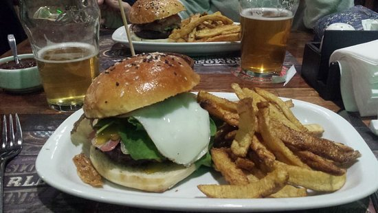

Mejores calificados
Don Chiquino
Plato principal:Lasagna de cordero ahumado
Lasagna de cordero ahumado
La pulperia
Plato principal:Asado al horno de barro con verduras braseadas
Asado al horno de barro con verduras braseadas
Blest Esquel
Plato principal:Hamburguesa "Aby Fenix"

Aby Fenix